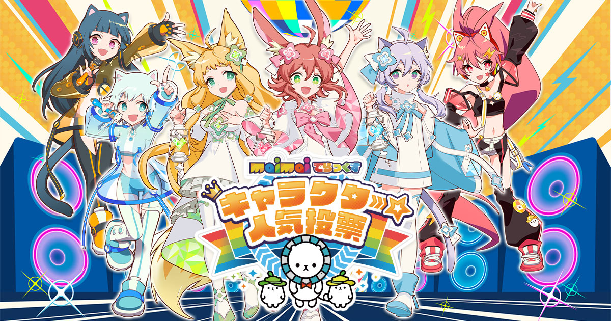

Maimai Deluxe Character Popularity Poll Starts Today. Top Winner Will Win Prizes
Sega Fave Co., Ltd. (Headquarters: Shinagawa-ku, Tokyo; President and COO: Sugino Yukio) will be holding the first popularity vote project for characters appearing in the arcade music game “maimai DX” series, “maimai DX Character Popularity Vote,” from 10:00 a.m. on Tuesday, August 20, 2024
A total of 161 characters will participate, 33 from the main character category and 128 from the local character category, and votes will be accepted for each category. The characters that rank in the top 10 in each category will be turned into prizes in “Sega UFO Catcher Online”! Voting will be open from 10:00 on Tuesday, August 20th, 2024 to 23:59 on Friday, September 20th, 2024 on the special website. You can vote once a day for up to two main characters and up to three local characters.
Those who participate in the voting for a total of 7 days during the voting period will receive 700 mai miles that can be used in the game. In addition, after voting, we will hold a campaign where 3 people who post their vote completion on X (formerly Twitter) will be drawn at random to win a set of “maimai deluxe best album Chiho” and “maimai deluxe best album Chiho 2”.
Be sure to keep an eye out to see who will emerge from among these unique characters the winner of first place and the right to win a prize.